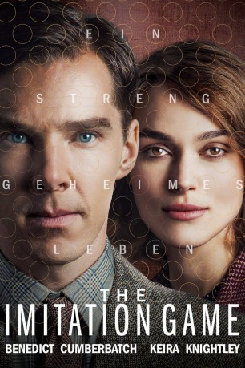

Auszeichnungen: 1 Oscars gewonnen für 7 Oscars nominiert
 gesehen am 11.06.2015
gesehen am 11.06.2015Alternativ: The Imitation Game
Auszeichnungen: 1 Oscars gewonnen für 7 Oscars nominiert gesehen am 11.06.2015
 
 IMDB-Wertung: 8.0 / 10
IMDB-Wertung: 8.0 / 10  Metascore:
Metascore: 
Nach einer unglücklichen Jugend beginnt der brillante Mathematiker Alan Turing während seines Studiums an der Cambridge-Universität, sein volles Potenzial zu entfalten. Schnell gehört er zu den führenden Denkern des Landes, besonders was seine Theorien zu Rechenmaschinen angeht. Genau diese machen auch den britischen Geheimdienst auf das Genie aufmerksam. Nach einem Test, den Alan mit Leichtigkeit besteht, wird er Mitglied einer geheimen Gruppe. Ihre Aufgabe: im Zweiten Weltkrieg die Kommunikation der Deutschen entschlüsseln. Mit Hilfe von Joan Clarke und Hugh Alexander und unter der Leitung von Stewart Menzies sowie Commander Denniston versucht Alan, den Verschlüsselungsapparat Enigma zu knacken, um an kriegsentscheidende Informationen zu kommen...
Jahr: 2014
Dauer: 114 Minuten
FSK: 12
Land: England Studio: Square One EntertainmentTonspuren: DD5.1 - ,
Untertitel: Deutsch, Englisch,
Auflösung: 1080p (1920x800) Größe: 8151 MB
Genre: Biographie, Drama, Thriller, Krieg
Regisseur: Morten Tyldum
Drehbuch: Graham Moore, Andrew Hodges
Soundtrack: Alexandre Desplat
Darsteller:
 Benedict Cumberbatch als Alan Turing
Benedict Cumberbatch als Alan Turing Keira Knightley als Joan Clarke
Keira Knightley als Joan Clarke Matthew Goode als Hugh Alexander
Matthew Goode als Hugh Alexander Rory Kinnear als Detective Robert Nock
Rory Kinnear als Detective Robert Nock Allen Leech als John Cairncross
Allen Leech als John Cairncross Matthew Beard als Peter Hilton
Matthew Beard als Peter Hilton Charles Dance als Commander Denniston
Charles Dance als Commander Denniston Mark Strong als Stewart Menzies
Mark Strong als Stewart Menzies James Northcote als Jack Good
James Northcote als Jack Good Tom Goodman-Hill als Sergeant Staehl
Tom Goodman-Hill als Sergeant Staehl Steven Waddington als Superintendent Smith
Steven Waddington als Superintendent Smith Ilan Goodman als Keith Furman
Ilan Goodman als Keith Furman Tuppence Middleton als Helen
Tuppence Middleton als Helen Victoria Wicks als Joan's Mother
Victoria Wicks als Joan's Mother Andrew Havill als Teacher
Andrew Havill als Teacher Will Bowden als Military Policeman
Will Bowden als Military Policeman Ancuta Breaban als Wren , uncredited
Ancuta Breaban als Wren , uncredited Peter Brown als Navy Captain , uncredited
Peter Brown als Navy Captain , uncredited Winston Churchill als Himself , archive footage, uncredited
Winston Churchill als Himself , archive footage, uncredited Alexander Cooper als Bletchley Park Agent , uncredited
Alexander Cooper als Bletchley Park Agent , uncredited Adolf Hitler als Himself , archive footage, uncredited
Adolf Hitler als Himself , archive footage, uncredited Luke Hope als MI6 Exam Agent , uncredited
Luke Hope als MI6 Exam Agent , uncredited Vera Horton als Nunn , uncredited
Vera Horton als Nunn , uncredited Ashley Hudson als British soldier , uncredited
Ashley Hudson als British soldier , uncredited Joseph Oliveira als M16 Agent , uncredited
Joseph Oliveira als M16 Agent , uncreditedDatei: X:\2014(G-M)\Imitation Game - Ein streng geheimes Leben, The (2014, FSK12, 1920x800).mkv seit 05.03.2015
Festplatte: HD 2013(I-Z)-2014(A-Z)
 Es gibt insgesamt 136 Filme in der Gruppe '2014(G-M)'
Es gibt insgesamt 136 Filme in der Gruppe '2014(G-M)'